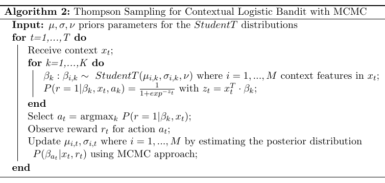

Contextual Multi-Armed Bandit
For the contextual multi-armed bandit (sMAB) when user information is available (context), we implemented a generalisation of Thompson sampling algorithm (Agrawal and Goyal, 2014) based on PyMC3.

The following notebook contains an example of usage of the class Cmab, which implements the algorithm above.
[1]:
import numpy as np
from pybandits.cmab import CmabBernoulli
from pybandits.model import BayesianLogisticRegression, BnnLayerParams, BnnParams, StudentTArray
/home/runner/.cache/pypoetry/virtualenvs/pybandits-vYJB-miV-py3.10/lib/python3.10/site-packages/pydantic/_migration.py:283: UserWarning: `pydantic.generics:GenericModel` has been moved to `pydantic.BaseModel`.
warnings.warn(f'`{import_path}` has been moved to `{new_location}`.')
[2]:
n_samples = 1000
n_features = 5
First, we need to define the input context matrix \(X\) of size (\(n\_samples, n\_features\)) and the mapping of possible actions \(a_i \in A\) to their associated model.
[3]:
# context
X = 2 * np.random.random_sample((n_samples, n_features)) - 1 # random float in the interval (-1, 1)
print("X: context matrix of shape (n_samples, n_features)")
print(X[:10])
X: context matrix of shape (n_samples, n_features)
[[-0.34010086 0.29231936 0.50365044 -0.04839801 -0.57627984]
[ 0.16478065 0.24365252 0.23380398 -0.57035721 0.40434826]
[ 0.75797185 -0.42698827 0.98442505 0.42302882 0.86534494]
[-0.50495798 0.05113916 0.85332508 -0.29933688 -0.94658987]
[-0.74244986 -0.2058213 0.96030056 0.16832951 -0.55147285]
[-0.54324952 0.07283435 0.42763653 -0.49169193 0.53253104]
[ 0.71876109 0.00126033 0.58061722 0.63049189 -0.8380556 ]
[-0.89889023 -0.90513913 -0.16966669 -0.14848783 0.93066211]
[-0.37171935 0.03385923 -0.19403483 -0.52404388 -0.09914882]
[-0.67172369 -0.5923852 -0.04845132 -0.93762544 -0.49238362]]
[4]:
# define action model
bias = StudentTArray.cold_start(mu=1, sigma=2, shape=1)
weight = StudentTArray.cold_start(shape=(n_features, 1))
layer_params = BnnLayerParams(weight=weight, bias=bias)
model_params = BnnParams(bnn_layer_params=[layer_params])
actions = {
"a1": BayesianLogisticRegression(model_params=model_params),
"a2": BayesianLogisticRegression(model_params=model_params),
}
We can now init the bandit given the mapping of actions \(a_i\) to their model.
[5]:
# init contextual Multi-Armed Bandit model
cmab = CmabBernoulli(actions=actions)
The predict function below returns the action selected by the bandit at time \(t\): \(a_t = argmax_k P(r=1|\beta_k, x_t)\). The bandit selects one action per each sample of the contect matrix \(X\).
[6]:
# predict action
pred_actions, _, _ = cmab.predict(X)
print("Recommended action: {}".format(pred_actions[:10]))
Recommended action: ['a1', 'a1', 'a2', 'a1', 'a2', 'a1', 'a1', 'a1', 'a2', 'a2']
Now, we observe the rewards and the context from the environment. In this example rewards and the context are randomly simulated.
[7]:
# simulate reward from environment
simulated_rewards = np.random.randint(2, size=n_samples).tolist()
print("Simulated rewards: {}".format(simulated_rewards[:10]))
Simulated rewards: [1, 1, 0, 1, 1, 0, 1, 0, 0, 0]
Finally, we update the model providing per each action sample: (i) its context \(x_t\) (ii) the action \(a_t\) selected by the bandit, (iii) the corresponding reward \(r_t\).
[8]:
# update model
cmab.update(context=X, actions=pred_actions, rewards=simulated_rewards)
/home/runner/.cache/pypoetry/virtualenvs/pybandits-vYJB-miV-py3.10/lib/python3.10/site-packages/pytensor/link/c/cmodule.py:2968: UserWarning: PyTensor could not link to a BLAS installation. Operations that might benefit from BLAS will be severely degraded.
This usually happens when PyTensor is installed via pip. We recommend it be installed via conda/mamba/pixi instead.
Alternatively, you can use an experimental backend such as Numba or JAX that perform their own BLAS optimizations, by setting `pytensor.config.mode == 'NUMBA'` or passing `mode='NUMBA'` when compiling a PyTensor function.
For more options and details see https://pytensor.readthedocs.io/en/latest/troubleshooting.html#how-do-i-configure-test-my-blas-library
warnings.warn(